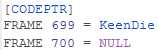
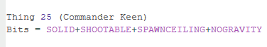
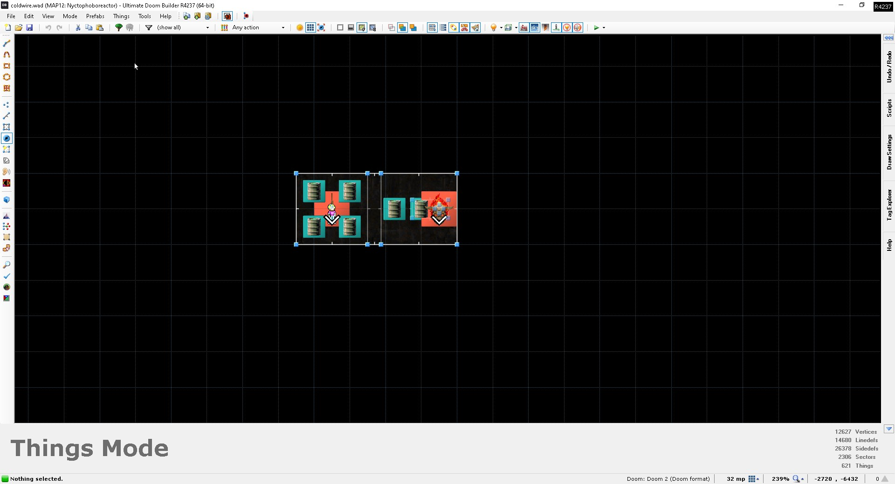
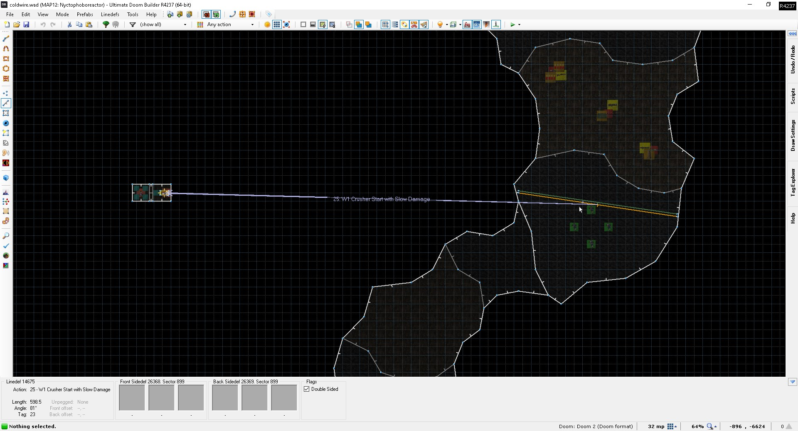
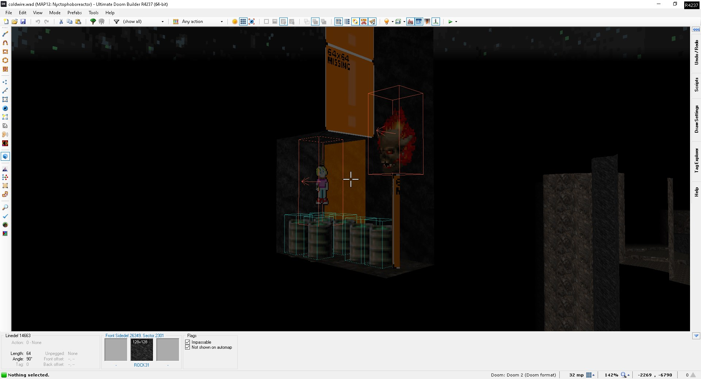

Having been speedrunning Doom since 2022, mostly in the NoMo category, I've grown
to be quite irritated whenever a map relies on monster death triggers for progression, making them virtually unbeatable in a category
where monsters don't spawn in the first place. Historically, the map slot that falls the most guilty of this is MAP07, with its
hardcoded mancubus and/or arachnotron death triggers. I could rant at length about how the Dead Simple gimmick has been done to death
and stopped being fun a long time ago, but as a NoMo speedrunner guy, the bigger problem with maps that utilize those triggers is that
you will inevitably run into a softlock in them more often than not. And with the advent of UMAPINFO and it introducing the possibility
to expand monster death triggers beyond the vanilla engine's hardcoded map slots, those softlocks are arguably a bigger problem now
than they were back in the pre-UMAPINFO days (though thankfully, they seem to be utilized in relatively rare cases).
Perhaps somewhat ironically, MAP12 of ColdWire would fall guilty of the same problem under normal
circumstances. Which is why, in the case of said map, I took it upon myself to implement a mechanism that would make the map actually
beatable when playing it with -nomonsters.
To explain how the NoMo anti-softlock mechanism in the map works, I should explain why such a mechanism was needed in the first place.
And the reason lies within the wad's DeHackEd patch.
In vanilla Doom, cyberdemons normally call A_BossDeath in their death state. A_BossDeath is a codepointer that triggers the level
exit in E2M8 and the opening of a door in E4M6 when the big baddie is killed. In ColdWire, however, I modified the cyberdemons to call
A_KeenDie upon dying instead so that doors might be tied to their death triggers if desired. And the final area of MAP12 does indeed
have a door that's tied to the A_KeenDie call. The nice thing about A_KeenDie is that it isn't hardcoded to a specific map slot - while Doom 2
only utilizes it in MAP32, it does in fact work in any map slot that has at least one Commander Keen and a door with the sector tag 666.
In the DeHackEd code, the relevant frames in the state table are frames 699 and 700. This is what the code looks like in BEX format:

Now, because the Commander Keen is also a monster and calls A_KeenDie in its own death state, it also needed to be modified to make it
actually spawn in -nomonsters for the mechanism to work. This turned out to be as simple as removing its COUNTKILL flag, and with that
small change, the DeHackEd code for Commander Keen now looks like this:

With the DeHackEd side covered, what does the mechanism look like in the map itself? Well, that's what I'll be explaining in the next
"chapter".
This might be a little complicated to explain in a concise manner, but the mechanism essentially involves five different components:
the modified Commander Keen, a lost soul, a crusher, a sector with the special action 10 and a few explosive barrels. If you're
struggling to make sense of all that, don't worry - I'll explain all of the components and what function they serve in detail below.
I'll also be including editor screenshots of the mechanism for reference. Let's start with a regular in-editor view:

The mechanism is contained in a series of sectors out of the regular bounds of the map. To the left, you'll see Commander Keen
chilling in his own compartment, surrounded by a few explosive barrels, and to the right is a lost soul on a pedestal of sorts,
oblivious to the fact that it's about to get crushed. While you could technically use any regular Doom monster for the mechanism,
I recommend using a lost soul due to them not counting towards the kill count.
But why do we need the lost soul in the first place? Because if there's nothing to slow down the crusher in non-NoMo, the door in the final
area is already going to be open by the time the player reaches it, allowing them to completely circumvent killing the cyberdemons to
open it. Anyway, the two compartments are separated by a sector with sector special 10 (close door after 30 seconds) in the middle.
This is done for the same reason as the inclusion of the lost soul. In the actual map, there's a walkover trigger that activates the
crusher with line special 25 (start crusher with slow damage) when the player crosses it.

The reason we want slow damage for the crusher is so that it'll slow down when it reaches the lost soul and allow our Keen to
survive, keeping our 666-tagged door in the final area closed until the player kills the cyberdemons. This way, when the crusher
gets to the barrels, the door in the middle will be closed, and the exploding barrels won't kill the Keen. With -nomonsters, the
lost soul will obviously not spawn, so the crusher won't slow down and can crush the barrels before the door closes, killing the
Keen in the process and allowing the 666-tagged door to open. This way, when the player reaches the final area of the map, the
door that they would normally need to kill the cyberdemons to open is already up. Yay for softlock prevention!
The sector with the crusher in it does need to have some good height as well so that the crusher doesn't reach the barrels too
early and kill the Keen when we don't want it to. But to also prevent the opposite from happening, we don't want it to be too
high either. I personally found a height of 984 map units to roughly be the sweet spot. In UDB's visual mode, the mechanism
looks something like this:

Now, it's worth noting that this system isn't entirely foolproof. Because we need a walkover trigger line to activate the crusher,
the player can still circumvent the mechanism by standing still for a few seconds at the start of the map and get softlocked in
the final area. In more advanced compatibility levels, such as Boom, we could start the crusher utilizing a voodoo doll conveyor,
but within the confines of ColdWire's compatibility target, I could not afford the luxury of utilizing them. So I just have to rely
on the players to move basically as soon as the map loads.
At any rate, I hope you found this technical explanation interesting to read, and feel free to steal it for your own map(s) with
666-tagged sectors that you want to make beatable in NoMo!